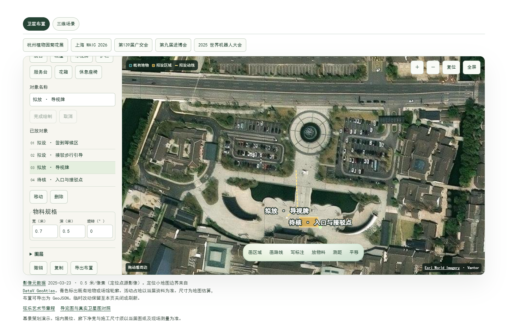

01 园区与影像
先用六处参照认清沿江方向、东西两侧水道、过河位置和游客中心周边，再缩到要布置的前场。
主办方原始导览图 · 未标注卫星影像以 2025 年贝多芬青少年弦乐艺术节为资料输入。主办章程列明 8 月 21–22 日在游客中心签到，签到处有活动标识，并有前往主唱酒店的接驳。演练先做前场步行段，再把需要场地方确认的位置留在图上。
先用六处参照认清沿江方向、东西两侧水道、过河位置和游客中心周边，再缩到要布置的前场。
主办方原始导览图 · 未标注卫星影像章程分开签到、排练、决赛、音乐会和露台活动。接驳路线按当届交通原件，活动地点按章程回查。
当届章程 · 到达图一 · 到达图二 · 到达图三 · 节目配图主唱酒店、音乐之家和涌潮阁按节点编号。地面图只给到场关系，排练房、比赛用房、楼层路径和技术配置另做分图。
酒店联系页 · 酒店会场提示 · 音乐之家馆方资料大潮季唱片铺照片用来参考主墙、台面、互动及人行空间。该活动资料与 2025 艺术节分开使用。
院落实景 · 唱片台面 · 互动使用在卫星布置画候选等候区和步行引导，摆一块导视牌，再加一条入口与接驳待核标注。第一次导出后，移动导视牌并重新导出。

回读两版文件后，导视牌保持同一对象编号并更新位置，其余三个对象保持原样。每个对象带有「策划演示」状态。